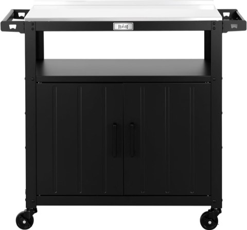

An outdoor kitchen extends a home's living space more than almost any other backyard upgrade out there. It creates a natural gathering spot, keeps the heat of cooking outside during summer, and turns a plain patio into somewhere people actually want to linger through an evening.
Costs vary wildly depending on scope. A simple setup can run a few thousand dollars, while a fully built-out kitchen with a pizza oven, stone counters, and built-in refrigeration can climb close to the price of a car. Starting small and adding features over time is a perfectly reasonable way to build toward a full setup without overcommitting on day one.


Feasto Outdoor Grill Cart with Storage Cabinet and Stainless Steel Top, Black
Shop on Amazon20 Ideas Worth Building Toward
Budget-Friendly Options That Still Impress
A full outdoor kitchen build doesn't have to mean a five-figure budget just to feel complete.
Starting with a grill and basic counter space, then adding a sink, lighting, and storage over time, spreads the cost out while still steadily building toward a genuinely functional setup.
Intention matters more here than a big first investment ever could. A space built up in phases, with each addition chosen deliberately, tends to feel just as considered as one built all at once.
Smart Technology
A few smart additions can genuinely simplify outdoor cooking without ever taking over the space.
A wireless meat thermometer connected to a phone removes the guesswork around doneness, letting the cook actually stay present at the gathering instead of hovering over the grill the entire time.
Smart upgrades work best when they quietly support the cooking experience rather than becoming the main event themselves.
Pergolas and Shade Structures
Shade matters more than most people initially plan for. Without it, summer cooking turns into something closer to an endurance test than a pleasant afternoon.
A pergola, climbing vines, or a retractable awning all protect both the cook and the appliances from direct peak-heat sun.
Shade also simply extends how many hours a day the space stays usable, which makes it one of the higher-impact additions available to add.
Comfortable Seating
Cooking draws people in, but comfortable seating is what actually keeps them around once they've arrived.
Mixing seating types, a few bar stools for quick perching, a built-in bench for longer stretches, accommodates different kinds of guests at the very same gathering.
A built-in bench with weatherproof cushions tends to become the spot everyone naturally gravitates toward once it's actually there.
Flooring That Lasts
Flooring anchors the entire outdoor kitchen design, and it needs to handle both durability and genuine safety at once.
A slippery surface causes accidents fast, and cheap materials tend to crack under the weight of heavy appliances combined with regular foot traffic.
Concrete pavers, natural stone, and textured tile all handle heavy use well while still looking clean and intentional underfoot.
Weatherproof Cabinetry
Outdoor cabinets need to survive rain, humidity, and direct sun, which rules out most standard indoor materials right away.
Stainless steel, marine-grade polymer, and treated teak all hold up well outdoors without demanding constant upkeep in return.
Untreated wood looks beautiful at first but requires real seasonal maintenance, so it's worth deciding how much upkeep actually feels manageable before committing to a material.
Lighting That Actually Works
One overhead bulb is rarely enough to properly light an outdoor kitchen for both cooking and entertaining at once.
Breaking lighting into zones, LED strips under the counters, warm wall sconces, and string lights used carefully, covers both function and atmosphere together.
Overdoing string lights specifically can tip a space from romantic into looking like a festival booth, so balance matters more than sheer quantity here.
A Smoker Station
For anyone chasing deep, slow-cooked flavor, a smoker turns a backyard into a genuine flavor lab worth bragging about.
It allows for real temperature control and experimentation with different wood chips, adding a dimension a standard grill simply can't replicate on its own.
A kamado-style grill is a particularly flexible option here, since it handles both high-heat grilling and slow smoking in one single unit.
A Side Burner
Grilling covers a lot of ground, but it doesn't replace an actual burner for sauces, sides, or anything that genuinely needs a pot rather than a grate.
A side burner means not having to juggle indoor stovetop duty while trying to stay present at an outdoor gathering.
It's a relatively small addition that tends to make an outdoor kitchen feel like a genuine cooking station rather than just a grill setup with extras.
Built-In Refrigeration
A built-in refrigerator is really what makes an outdoor kitchen feel genuinely complete, rather than just a grill with a counter attached to it.
It keeps drinks and ingredients cold without constant trips back inside, which matters more than it seems like it would during a long gathering.
An outdoor-rated, stainless steel model is worth the extra cost over a standard indoor fridge, since regular units simply aren't built to handle outdoor temperature swings.
Fire Feature Integration
A fire pit or fireplace pairs naturally with an outdoor kitchen, adding warmth well beyond whatever the cooking itself provides.
It extends usability into cooler evenings and builds genuine ambiance that a grill alone really can't provide on its own.
Fire tends to keep people around longer, too, conversations deepen and evenings stretch out naturally once there's a flame nearby to sit near.
Smart Storage Solutions
Storage is one of the easiest things to underestimate when planning an outdoor kitchen, and one of the most regretted omissions afterward.
Weatherproof cabinets and drawers keep tools organized and protected from moisture, instead of left scattered and exposed to rust outside.
Skipping storage to save on a budget project tends to cost more in replaced tools and frustration than it ever actually saves upfront.
An Outdoor Sink
An outdoor sink feels like an unnecessary luxury right up until there's actually one installed and in use.
Washing hands, rinsing produce, and cleaning utensils without a trip back inside saves real time during a cookout.
It's a small addition that quietly boosts both convenience and hygiene throughout an entire cooking session.
Modern Minimalist Design
For anyone who'd rather skip the rustic look entirely, a modern minimalist outdoor kitchen leans into clean lines instead.
Black stainless steel, concrete counters, and a generally sleek, uncluttered layout define this particular style.
Simple designs like this often read as more expensive than they actually are, largely because there's less visual noise competing for attention around them.
Rustic Stone Design
Natural stone brings a timeless quality to an outdoor kitchen that trend-driven materials rarely manage to match.
Stacked stone for the base, paired with granite or concrete countertops and warm lighting, builds a grounded, inviting look.
Stone also tends to age well and hides everyday wear better than a glossier finish would, which matters for something that lives outside year-round.
A Covered Setup for All-Weather Use
An unprotected outdoor kitchen is at the mercy of the weather, which genuinely limits how often it actually gets used.
A pergola or a retractable canopy extends usability well beyond the few perfect-weather days each month, cooking continues through light rain, and appliances stay protected from direct sun and moisture.
Starting with a basic pergola and adding a retractable canopy later is a reasonable way to phase in full weather protection over time.
A Bar Area
A bar area adds energy to an outdoor kitchen that a grill alone simply can't provide.
A small beverage fridge, floating shelves for glasses, and a simple prep sink, where plumbing allows, cover the basics nicely.
Even just a compact fridge cuts down significantly on trips back inside for drinks, which keeps the whole gathering centered outdoors where it belongs.
A Pizza Oven
A pizza oven adds genuine visual interest and expands what an outdoor kitchen can actually cook beyond the usual.
Wood-fired ovens deliver a flavor that's hard to replicate any other way, though they take some practice to use well; gas models trade a bit of that flavor for convenience instead.
Either option turns the outdoor kitchen into something guests specifically look forward to, well beyond the usual burgers and skewers.
An Outdoor Kitchen Island for Entertaining
An island turns a simple grill area into an actual social hub, rather than just a cooking station off to the side.
It lets guests sit and talk while food is being prepared, which keeps conversation flowing instead of isolating whoever's cooking.
People naturally gather around food, and an island designs the space to support that instinct instead of working against it.
Built-In Grill Station
A built-in grill instantly elevates an outdoor kitchen setup compared to a freestanding model sitting out on its own.
It creates a permanent cooking zone, eliminates the wobble and awkward footprint of a rolling grill cart, and opens up countertop space on both sides for prep and serving.
The upgrade from freestanding to built-in tends to make cooking and cleanup noticeably easier, since everything finally has a fixed, stable place to happen.
Planning Before Building
Before getting into the design details, it's worth handling the less exciting groundwork first, checking local codes, utility access, and plumbing requirements early avoids expensive surprises later on.
Positioning matters too: placing the grill where smoke won't blow into the seating area, and counters where harsh afternoon sun won't make prep work miserable, makes the space considerably more comfortable to actually use day to day.
Choosing a Layout
Layout shapes how usable an outdoor kitchen actually feels day to day, more than almost any single material choice does.
An L-shaped layout works well on a medium to large patio, separating the grilling zone from prep and serving space. A straight-line layout suits a smaller backyard, keeping everything in one efficient row while using fewer materials overall.
A U-shaped layout surrounds the cook with counter space and gives guests room to sit at the outer edge, which suits anyone who entertains often and wants company close by.
Final Thoughts
An outdoor kitchen does more than add resale value, it changes how a home actually gets used, pulling gatherings, meals, and quiet evenings outside rather than keeping everyone indoors.
None of these twenty ideas require building everything at once. Starting with the basics and adding features with intention, rather than chasing every trend at the same time, builds a space that actually fits how it'll really be used.